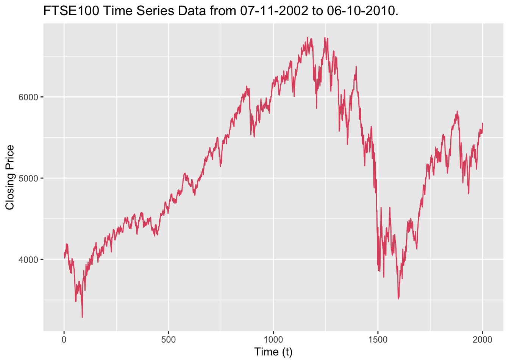

Abstract
In this project we shall investigate the use of GARCH models for calculating Value at Risk (VaR). Specifically we will fit a GARCH(1,1) model to a time-series data set of FTSE100 closing prices between 7 November 2002 and 6 October 2010 before comparing our results with previous results attained using other methods for calculating VaR. We will discuss the appropriateness of the GARCH model assumptions for our data setand look at fitting other GARCH models to attain improved VaR predictions. Finally, we will discuss our results in terms of the literature on modelling volatility using GARCH models.

1. Introduction
We aim to investigate the appropriateness of the GARCH model for modelling FTSE100 closing prices. We will fit the proposed model to the 1000 most recent log returns from the FTSE100 data set before evaluating whether the data is conditionally normal by performing a Q-Q plot. We will then be able to predict the Value at Risk for a period of 24 hours for £1000 invested in a FTSE Index Fund and then use cross-validation to evaluate this approach. In our discussion we will compare our result with previous workshop results as well as considering the appropriateness of the GARCH model assumptions for the FTSE100 data. We will conclude by looking to fit other GARCH models as well as considering our results in terms of the literature on modelling volatility using GARCH models.
2. Model Fitting
We consider a data set containing the daily returns from the FTSE100 from 7 November 2002 to 6 October 2010 - shown in Figure 1 below.

Figure 1 - FTSE100 closing prices from November 7th, 2002 to October 6th 2010.
We fit the following model to the 1000 most recent log returns from the FTSE100 data set: